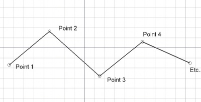

Description
L'outil fil (Wire) crée polyligne (séquence de lignes de plusieurs segments) dans le plan de travail actuel. Il prend les attributs de largeur et couleur, précédemment défini dans la barre d'outils style. L'outil fil (Wire) se comporte comme l'outil ligne de projet, sauf qu'il ne s'arrête pas après deux points.

Utilisation
- Pressez sur le bouton Draft Wire, ou pressez la touche W puis sur I.
- Cliquez le premier point dans la vue 3D, ou entrez les coordonnées.
- Cliquez un point additionnel dans la vue 3D, ou, tapez les coordonnées.
- Pressez la touche F ou C, ou, double-cliquez le point suivant, ou cliquez sur le premier point pour finir ou fermez le fil. Si le fil est fermé, il sera aussi une face même s'il apparaît comme un filaire.
Options
- Pressez sur la touche F ou Terminer pour finir la ligne, le fil reste ouvert.
- Pressez sur la touche C ou Close ou cliquez sur le premier point pour finir la ligne, le fil sera fermé, en ajoutant un dernier segment entre le dernier point et le premier.
- Pressez sur la touche X, Y ou Z après un point, pour contraindre le prochain point sur l'axe donné.
- Vous pouvez saisir manuellement les coordonnées, entrez simplement les nombres, puis appuyez sur la touche ENTER entre chaque composants X, Y et Z.
- Pressez sur la touche R, ou cliquez sur la case à cocher Relatif pour activer/désactiver la fonction. Si le mode Relatif est activé, les coordonnées du point suivant, se base sur le dernier point effectué. S'il n'est pas activé, les coordonnées sont absolus, et obtenues à partir du point d'origine (0,0,0).
- Pressez sur la touche T ou cliquez sur la case à cocher Continue pour activer/désactiver la fonction. Si le mode Continuer est activé, la fonction continue, après avoir fini ou fermer votre fil, cela vous permet de continuer avec la même fonction sans devoir la sélectionner une nouvelle fois.
- Pressez sur la touche CTRL pendant le dessin, force l'accrochage, de votre point à l'emplacement le plus proche du composant logiciel enfichable, indépendamment de la distance.
- Pressez la touche SHIFT contraint votre prochain point horizontalement ou verticalement en relation avec votre point precédent.
- Pressez sur la touche W, ou sélectionnez le bouton Contour, pour supprimer le segment courant, et continue un nouveau segment à partir du dernier point créé.
- Pressez sur la touche CTRL+Z ou sélectionnez le bouton Annuler, pour revenir au dernier point.
- Pressez sur la touche I, ou le bouton Filled, transforme le fil en face dès qu'il est fermé. Cette valeur définit simplement la propriété du fil de Flat lines ou Wireframe, il peut donc être facilement modifié plus tard.
- Pressez sur la touche ESC, ou le bouton Cancel pour quitter la commande.
- Closed wires, en mode d'affichage "Flat Lines", peut afficher un motif de hachures, en définissant la propriété "Pattern".
Propriétés
- DONNÉESClosed: Détermine si le Wire est ouvert ou fermé.
- DONNÉESChamfer Size: Spécifie la dimension du chanfrein des coins.
- DONNÉESFillet Radius: Spécifie le rayon de courbure des nœuds du wire
- DONNÉESSubdivisions: Divise les segments du fil avec le nombre de subdivisions donné Disponible dans la version 0.16
- VUEEnd Arrow: Montre le symbole d'une flèche au dernier point du fil, donc, il peut être utilisé comme une flèche d'annotation.
- VUEPattern: Spécifie le type de hachure a utiliser (Wire Fermé).
- VUEPattern Size: Spécifie la dimension de la hachure.
Voir aussi la page Draft Pattern
Script
L'outil fil peut être utilisé dans des macros, et, dans la console Python en utilisant le code suivant :
makeWire (list or Part.Wire, [closed], [placement], [facemode])
- Crée un objet fil (Wire) avec les données de vecteurs ou du fil donné.
- Si le fil est fermé ou si le premier et le dernier point est identique, le fil est fermé.
- Si facemode est activé (TRUE) (le fil est fermé), le fil apparait plein.
- Les attributs de largeur et couleur définis seront utilisés.
- Retourne l'objet nouvellement créé.
Exemple:
import FreeCAD,Draft
p1 = FreeCAD.Vector(0,0,0)
p2 = FreeCAD.Vector(1,1,0)
p3 = FreeCAD.Vector(2,0,0)
Draft.makeWire([p1,p2,p3],closed=True)
{kind=link}
{kind=link}
{kind=link}
{kind=link}
{kind=link}
{kind=link}